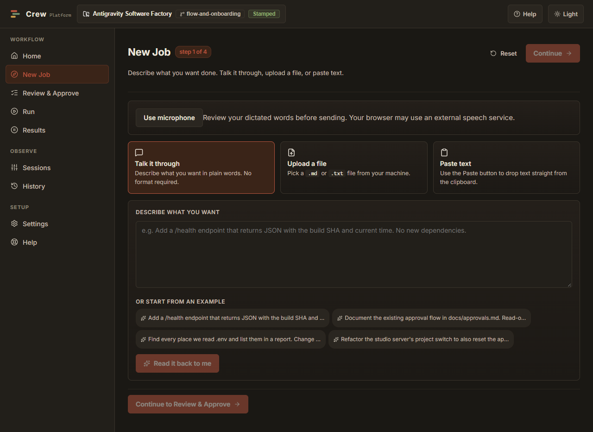

C.R.E.W. Technologies / C.R.E.W. Software
An idea. A conversation.
A crew to help build it.
This manual explains the controls you use. You do not need to understand the source code to follow the main path.
Start here
Crew helps you describe a software job, review the brief, choose a workflow, and inspect what happened. Python controls the steps; agents perform the work inside them. The wider vertical platform remains future work.
This is a personal Windows workspace application, not a released installer or app-store product. The interface and isolated controls have been tested. A real router run reached planning and was stopped at its test cap; a finished real app has not yet passed end-to-end verification. Do not interpret a green build of Crew itself as proof that every generated product works.
Get it and open it
If someone has prepared a Crew folder for you, open that folder in File Explorer and double-click Start-Crew.cmd. Your browser should open Crew on this computer. The launcher starts the service in the background and keeps startup logs beside the application.
There is no EXE/MSI installer, automatic shortcut, or automatic updater in this release. Preparing an unconfigured folder requires a maintainer; the Learner's Manual explains that path. This manual does not substitute source compilation for finished-product installation.
- Open your prepared Crew folder.
- Double-click Start-Crew.cmd.
- Look for the C.R.E.W. Software title in the browser.
- Keep the folder in its current location; moving it changes saved project paths.
Why does a browser open?
Crew's interface is a web application served from your own computer. Opening it does not publish your work on the Internet.
No administrator access is expected for ordinary use. The launcher does not start your LLM router; start that separately using its usual controls.
First launch
The header names the selected project. Use the project control to create a separate app project or reopen a saved one. A new project inherits your saved connection profiles, so you do not need to retype every key. Select a project deliberately before starting work.
Open Settings → Connection profiles. Choose Interviewer, check the endpoint and model, and use Test connection. Save a changed profile. Repeat only for roles needing different connections; existing saved profiles remain available after a restart.
The first-run tour is optional. Help lets you replay it. Skipping the tour does not disable any feature.
Create a job

- Open New Job.
- Choose Talk it through, Paste text, or Upload a file. Upload accepts Markdown and plain text.
- Use the microphone button if your browser supports it. Review the dictated text before sending. Otherwise, paste your dictated text or upload it.
- Send the description. Your selected interviewer proposes a draft and asks necessary follow-up questions.
- Choose a suggested answer or add a clarification. You can correct assumptions and ask for a smaller scope.
- When the interviewer has enough information and the required brief sections are present, Continue becomes available.
- In Review & Approve, select the workflow, review each section, and approve the brief.
- In Run, select Run the approved job and confirm the second start question.
- Watch progress, then open Results.
Your first approval records the brief. The second confirmation authorizes execution. Changing connection or roster settings after approval requires a fresh approval. The stored approved text is used for the job, rather than an editable draft.
Follow the main path
Choose a step for its explanation.
While a job runs, use Stop to terminate it and its child processes. Windows Pause is unavailable; the interface offers Stop rather than pretending execution is suspended. Stopping is not an undo: files already written remain.
Connections and rosters
| Control | What it means |
|---|---|
| Role | The task an agent performs, such as interviewer or reviewer. |
| Base URL | Your provider or router endpoint. Enter or paste it once. |
| Model | A selected model, or auto if your router supports routing. Fetch models fills the list; it does not prove every model can perform tool calls. |
| API key | Paste trims whitespace. Existing saved keys are masked and retained when you save other settings. A dummy key is valid only for endpoints that accept it. |
| Reasoning level | Requested effort for workflow agents. Support depends on the selected model and endpoint. |
| Local / cloud | A saved connection variant. A localhost router can forward requests to paid cloud providers. Saving a variant selects it for that role. |
| Token cap | A positive whole-number reporting threshold. Crew stops when reported usage reaches it; reporting delays can cause overshoot. |
Under Roster & API keys, you can save and recall named agent configurations. A custom roster saves the agent configuration and a private snapshot of the current connections. Recalling it restores both. A workflow chooses which steps run. A full build requires planner, builder, reviewer, and documenter. Choose Scout for inspection or Plan Only for planning instead of invoking every role.
Connection profiles supply actual runtime endpoints and model IDs. A roster's older model text does not override the selected saved connection. Hide-thinking is a stored preference; streamed workflow logs currently contain progress, not an exposed transcript of private model reasoning.
Changes apply to new work. Stop an existing job before switching projects. Normal settings changes do not need an application restart.
Results and history
Results summarizes the run. Sessions provides the deeper trace: phases, tools, envelopes, gates, and reported usage. History preserves approval and run records. A reviewer passing a job is evidence of that review, not a guarantee that every possible defect is absent.
- Success: the chosen workflow completed. Check which validations that workflow actually contains.
- Fail: read the failed phase and its explanation; incomplete files may remain.
- Stopped: work ended by request or a usage cap. It did not finish.
Some workflows make local Git commits. They do not automatically publish your project. Review generated outputs before sharing or deploying them. This release does not provide a general artifact-export button; outputs remain in the selected project folder.
Something went wrong
I cannot open Crew
Check first: use Start-Crew.cmd in the prepared folder. If a startup message says the first build is missing, the folder needs preparation by a maintainer. Startup logs are in the application's hidden runtime folder. Do not reinstall or delete your settings to troubleshoot.
The interviewer cannot connect
Start your router. Then open Settings, choose Interviewer, and Test connection. Check the saved endpoint, not every character of a key. If a key is rejected, paste a fresh copy and save it. Your submitted description is saved even when the request fails.
The interviewer keeps asking questions
Tell it which assumptions are acceptable or ask for a smaller result. It must establish a goal, requirements, boundaries, and acceptance checks before proceeding. Editing the brief directly resets readiness; send a clarification to have it reassessed.
Approval was rejected
The approval may have been withdrawn, may belong to another workflow, or may predate changed connections/rosters. Return to Review & Approve. This prevents running a different job from the one you reviewed.
The job stopped at its token cap
The job is unfinished. Read the trace before deciding to raise the cap or reduce the scope. Input and cached context can make one reported turn larger than expected. Raising a cap permits more usage; it does not repair an underlying loop.
A validation command is missing
The project needs real checks, not always-passing placeholders. Ask the builder to configure checks appropriate for the app. Crew refuses to treat a missing check as a successful test.
My microphone or Paste button does not work
Check browser permission for the microphone or clipboard. Use Upload as an alternative. Voice support varies by browser. Important steps remain available without voice.
I selected the wrong project
Stop active work, then choose the correct saved project. Crew rejects project switching while a job is active. Confirm the header before approving new work.
Your data and privacy
The brief, conversation, and relevant project contents may be sent to the models behind your router. Localhost identifies the router's location, not the final destination of your data. Browser speech recognition may use the browser vendor's external service.
Profiles and approvals are stored per project in hidden runtime storage, currently named .sssf for compatibility. Profiles contain plaintext credentials; Git ignores that folder. The browser receives masked saved keys. Drafts also use browser storage; traces and agent artifacts live under the project's workflow data folder. There is no application-level encryption or automatic retention cleanup.
Back up the complete application/project folders and browser profile if you need browser drafts. Keep backups private because they can include credentials. Before restoring, stop active jobs and the service. Closing the browser does not stop a running job or the background service.
Reading manuals and existing outputs works offline. Model-assisted intake and agent work require a reachable model service; cloud routing requires Internet access. No automatic queue is promised when a provider is unavailable.
Updates and removal
There is no automatic updater. A maintainer replaces the application code while preserving runtime folders, project folders, and saved credentials, then rebuilds and restarts the service. Keep a backup before an update.
There is no registered Windows uninstaller. Stop jobs and the background service before removing a prepared folder. Export or copy projects you want to keep first. New projects created through Crew live inside the application's runtime projects folder, so deleting the whole application folder deletes those projects too. Browser drafts remain until you clear the site's browser storage.
Glossary and FAQ
- Brief / specification
- The reviewed description of the intended result and how to check it.
- Router
- A service that selects or forwards requests to models. Your
autochoice is resolved there. - Roster
- A saved set of roles and configuration, reusable across jobs.
- Workflow
- The ordered steps and checks for a particular job.
- Gate
- A programmatic check of an agent's output or claim.
- Token
- A unit used to measure model input and output. It is not the same as a word or a dollar.
- Localhost
- This computer.
Do I need to type a key for every role?
Existing saved profiles are reused, and new projects inherit them. You may choose different connections for different roles. After saving a connection, Use saved connection for all roles copies it to the other roles with one confirmation.
Can Crew run grants and permit jobs now?
No. Those are planned verticals. This release focuses on the personal software-building workflow.
Are screenshots in this manual real?
A current New Job screenshot is included above. The interactive maps describe the implementation and are not fabricated interface captures.
Investigate and verify without commits
Choose Investigate & Plan Only when an approved job needs static evidence about an existing local JavaScript directory or ASAR. The specification must include a crew-rea block naming the exact question, absolute target path, scope and static-local actions. The interviewer can help prepare that block. Approve the selected workflow before running it.
The engine collects real REA evidence. A tool-free interpretation agent distinguishes observations, inferences, unknowns and limitations. The engine saves matching handoff copies for the planner. This workflow ends after planning: it does not build or commit. Plan Only never performs an investigation.
Build, Verify & Document Without Commits runs planning, implementation, project checks, review and documentation, leaving outputs for inspection. It requires test, lint, typecheck and build commands for that project. Normal full-build workflows still commit at their documented stages. Neither option publishes anything.
Use Send follow-up to add requirements or corrections in New Job. After editing the working spec, choose Re-check edited spec to restore readiness only when the required sections and acceptance details are present. Settings preserves Windows paths in saved check commands; quote a path containing spaces or keep the saved argument list.
Code, prompt, connection, roster or project-check changes require renewed approval. If a provider rejects a request, Crew records a sanitized diagnostic in private project storage and does not silently repeat the same rejected request. A token cap must be a positive whole number and can overshoot by a reported turn.